Emily in Little Paris NYC Takeover
For the Season 3 launch of Emily in Paris, the team set out to turn fandom into a real-world experience. The goal was simple: bring Emily's whimsical, fashion-forward version of Paris to life for fans in the middle of a cold New York winter.
We transformed Soho's "Little Paris"—a city block packed with French businesses—into an Emily in Little Paris holiday market designed to feel like stepping directly into the show's world. Chic boutiques, custom food experiences, fashion moments, and immersive photo installations recreated the show's most iconic aesthetics, giving fans an environment built for discovery and social sharing.
Visitors explored the market with custom "Emily in Little Paris" passports, collecting stamps through interactive brand experiences and redeeming them for exclusive merchandise. Partnerships with beloved local businesses added authenticity, while appearances from media and talent amplified cultural reach.
Over three days, the experience drew more than 5,000 attendees, generated millions of media and social impressions, and turned a chic New York City neighborhood into a living extension of the Emily in Paris universe.
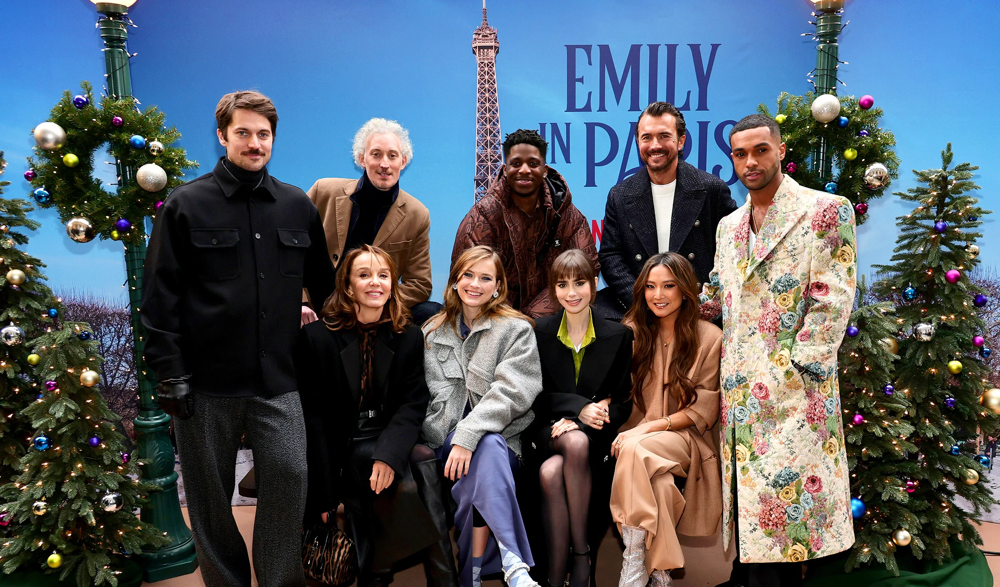
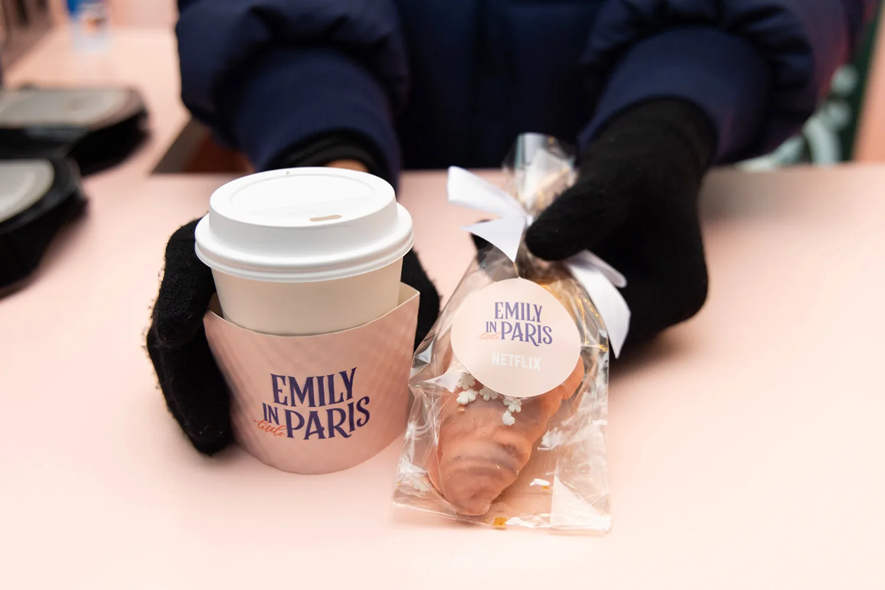
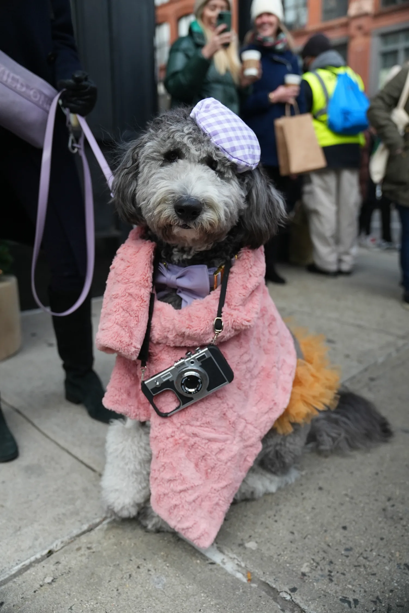
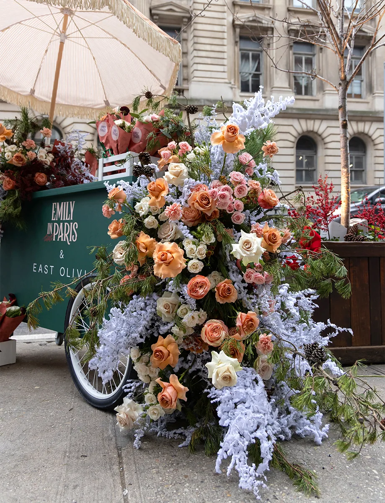
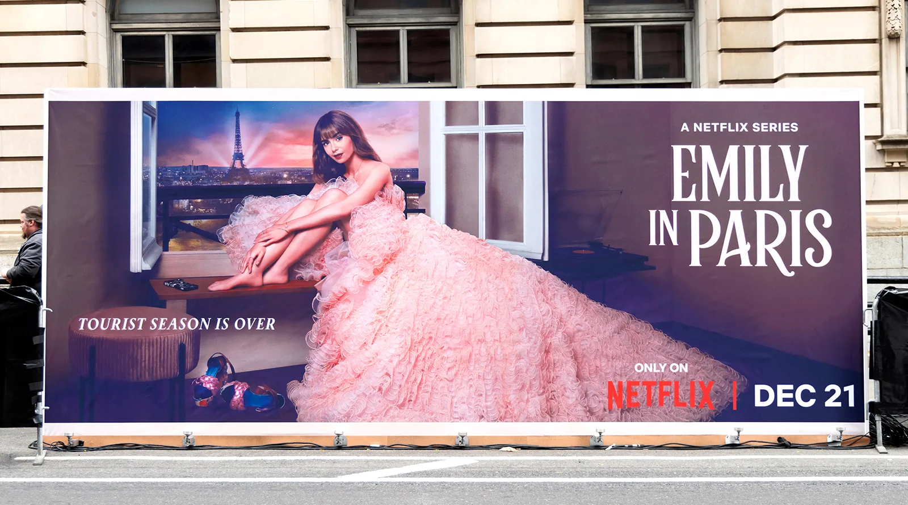
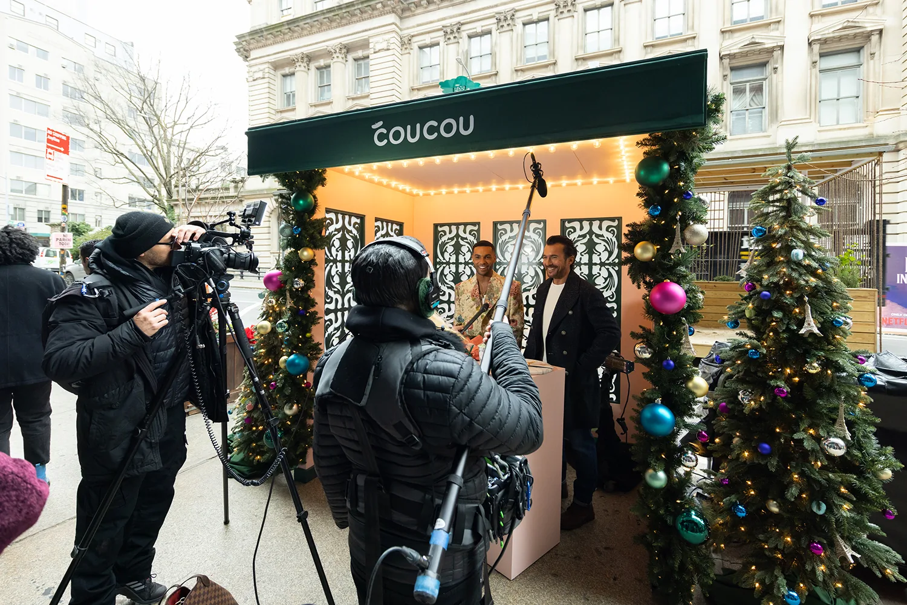
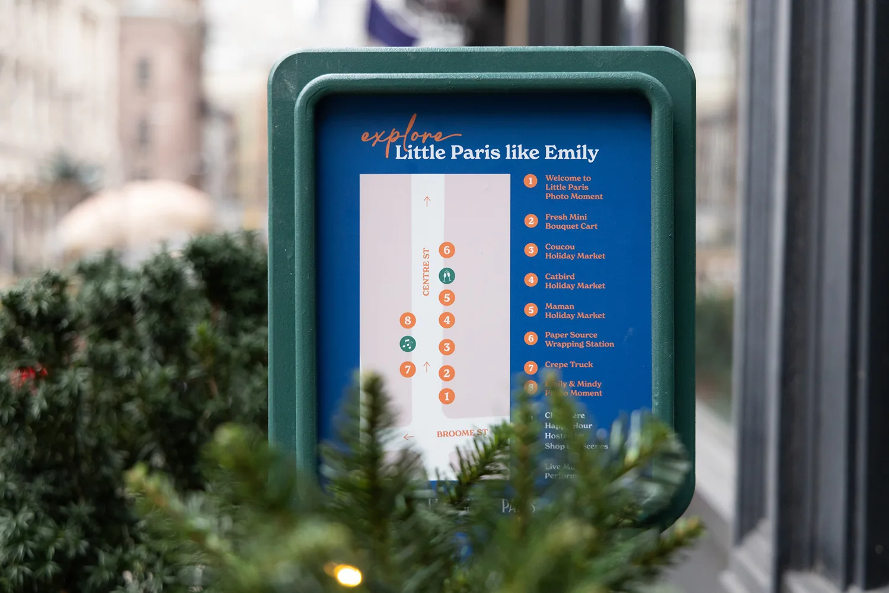
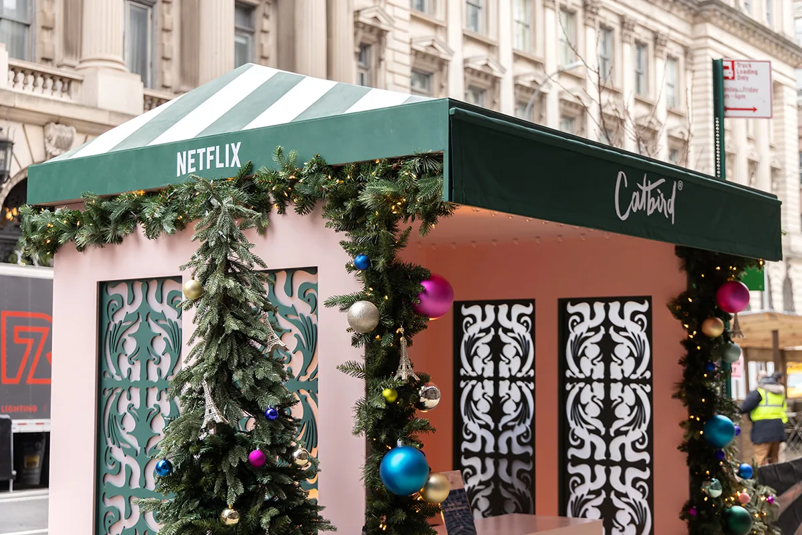
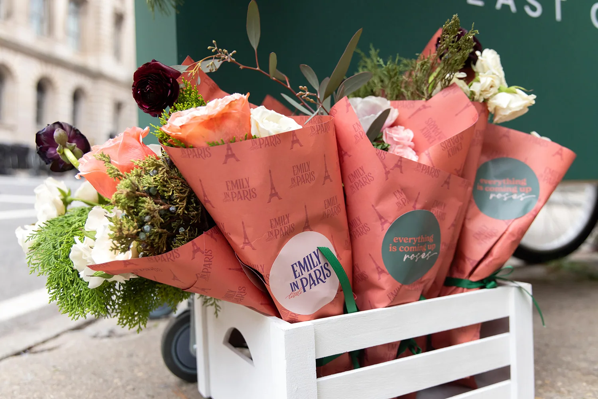
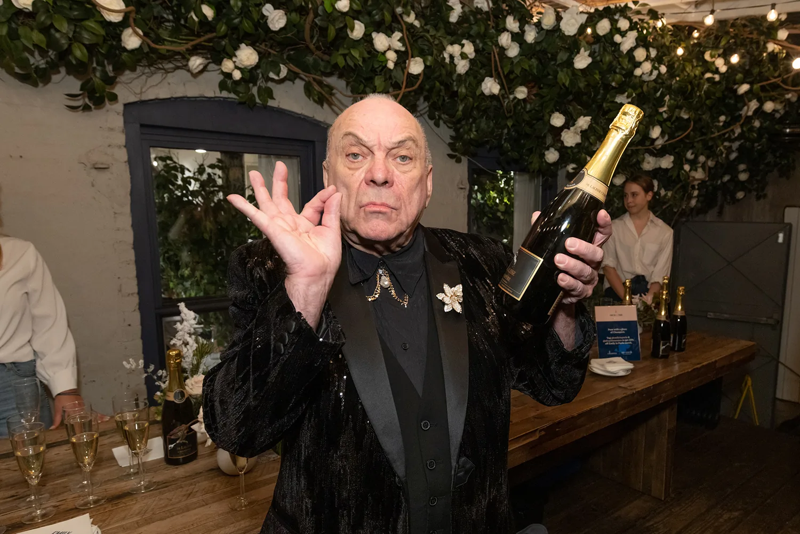
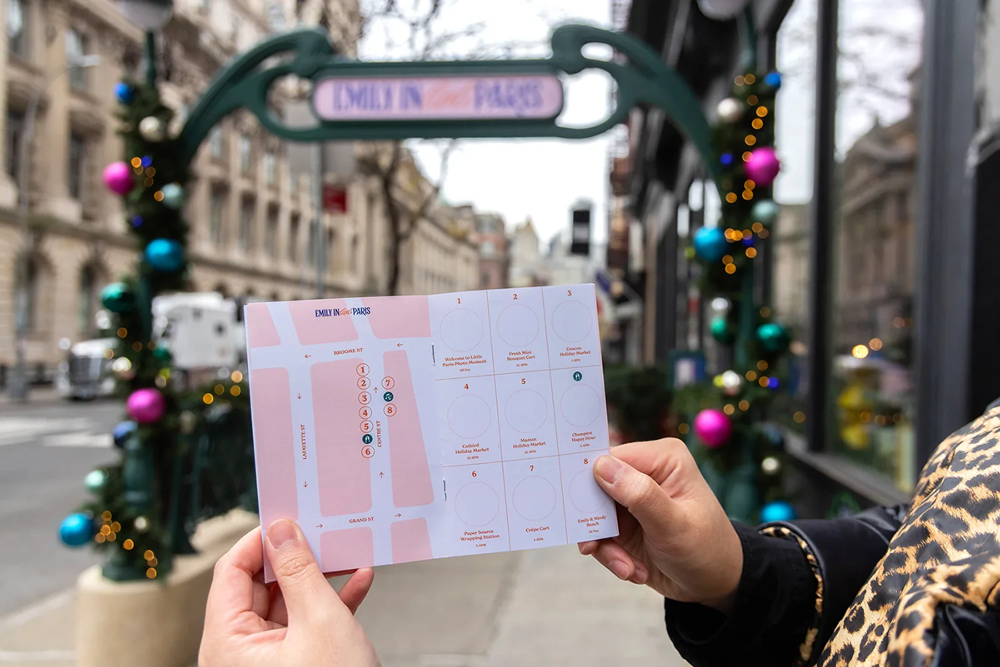
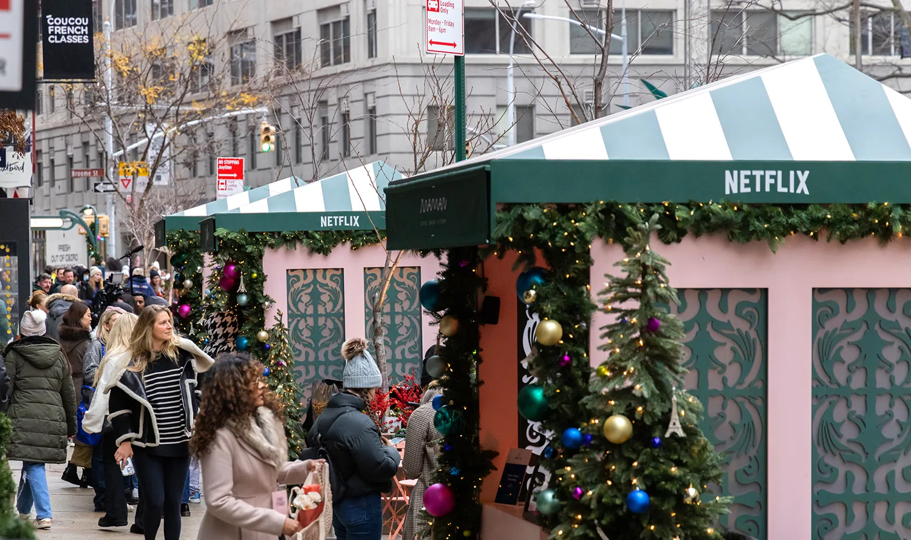